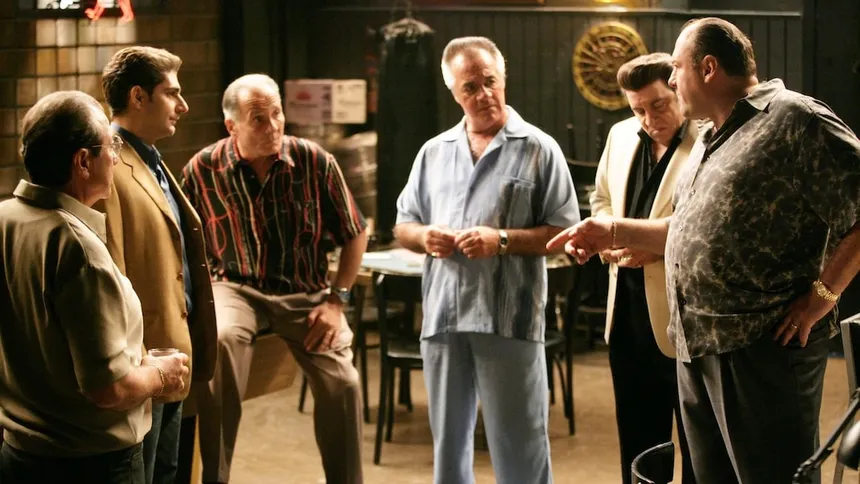

Início
The Sopranos é uma série de televisão americana criada por David Chase. A história acompanha Tony Soprano e sua vida como chefe de uma organização criminosa.

Sobre a série
A série combina drama, crime e humor para mostrar os conflitos entre a vida familiar e profissional de Tony Soprano.
- Tony Soprano
- Carmela Soprano
- Christopher Moltisanti
- Paulie Gualtieri
Personagens
| Nome | Função |
|---|---|
| Tony Soprano | Chefe da família criminosa |
| Christopher Moltisanti | Associado de Tony |